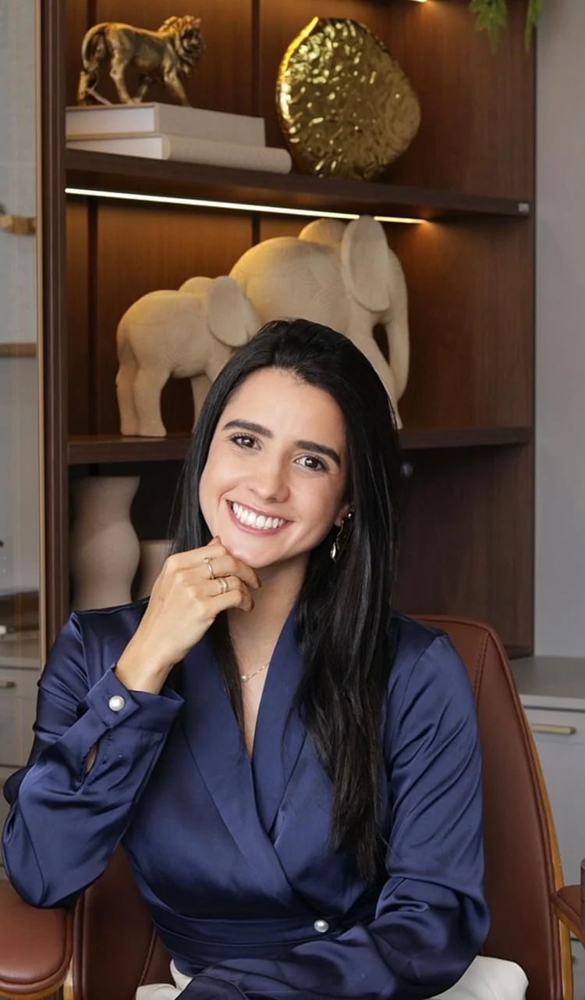
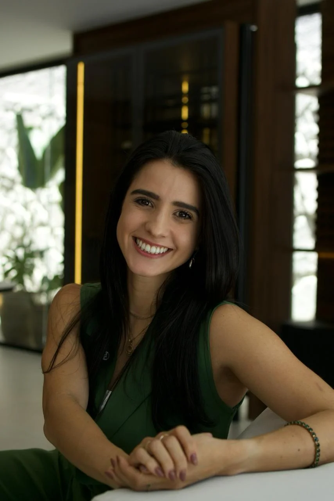

Medicina
Universidade Federal de Alagoas - UFAL.
CRM-AL 8622 RQE 6407


Formada em Medicina pela Universidade Federal de Alagoas, a Dra. Paula Toledo construiu sua trajetória unindo Clínica Médica, Endocrinologia e Metabologia e acompanhamento individualizado.
Sua atuação considera sintomas, histórico clínico, rotina, composição corporal, metabolismo e objetivos pessoais, permitindo a elaboração de um plano terapêutico coerente com a realidade e as necessidades de cada paciente.
Atuação baseada em ciência e evidências, com foco em saúde, qualidade de vida e resultados sustentáveis.
Formação em Medicina, Clínica Médica e Endocrinologia e Metabologia.
Universidade Federal de Alagoas - UFAL.
Residência pela Universidade Estadual Paulista — UNESP.
Especialização pelo Centro de Diabetes e Endocrinologia da Bahia — CEDEBA, em Salvador (BA).
Avaliação de composição corporal, rotina, exames e fatores metabólicos para construção de um cuidado sustentável.
Acompanhamento clínico, análise de exames e orientação terapêutica para controle glicêmico e prevenção de complicações.
Investigação e acompanhamento de alterações como hipotireoidismo, hipertireoidismo e outras disfunções tireoidianas.
Avaliação do risco ósseo, exames e estratégias de acompanhamento para saúde dos ossos.
Escuta qualificada e avaliação hormonal, metabólica e clínica para uma fase de vida com mais clareza e cuidado.
Presencial com exame físico, análise laboratorial e bioimpedância; online com avaliação segura e acompanhamento contínuo.
Atendimento completo e individualizado, com avaliação clínica detalhada, exame físico, análise de exames laboratoriais e realização de bioimpedância.
Consulta online segura, com análise de histórico, sintomas, exames e objetivos terapêuticos. Também indicada para retornos e acompanhamento contínuo.

Informações objetivas sobre consultas, exames e acompanhamento endocrinológico.
Quando houver queixas ou necessidade de acompanhamento relacionados a peso, metabolismo, diabetes, tireoide, menopausa, osteoporose ou alterações hormonais.
Sim. A consulta presencial inclui avaliação clínica detalhada, exame físico, análise de exames laboratoriais e realização de bioimpedância.
A teleconsulta permite avaliação de histórico clínico, sintomas, exames laboratoriais e objetivos terapêuticos, com acompanhamento individualizado. Nessa modalidade, não há bioimpedância.
Levar exames recentes ajuda na avaliação, mas a consulta também serve para entender o histórico e definir quais exames são realmente necessários.
Não. O plano deve considerar histórico, rotina, composição corporal, metabolismo, exames, objetivos e possíveis condições associadas.
Conteúdos e informações sobre endocrinologia, metabolismo e saúde hormonal.
Clínica Garbini
Empresarial Record Office, R. Eng. Mário de Gusmão, 988 - Ponta Verde, Maceió - AL, 57035-000
(82) 98209-6969Instituto do Fígado e Metabolismo - IFM
R. Expedicionário Brasileiro, 128 - Centro, Arapiraca - AL, 57300-590
(82) 99110-9929Atendimento online
Consulta por telemedicina para avaliação, retornos e acompanhamento contínuo, quando adequada ao caso.
(82) 99301-6413